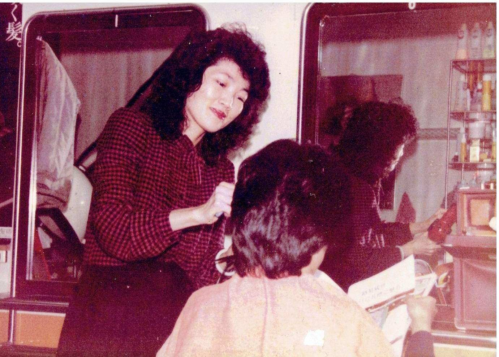
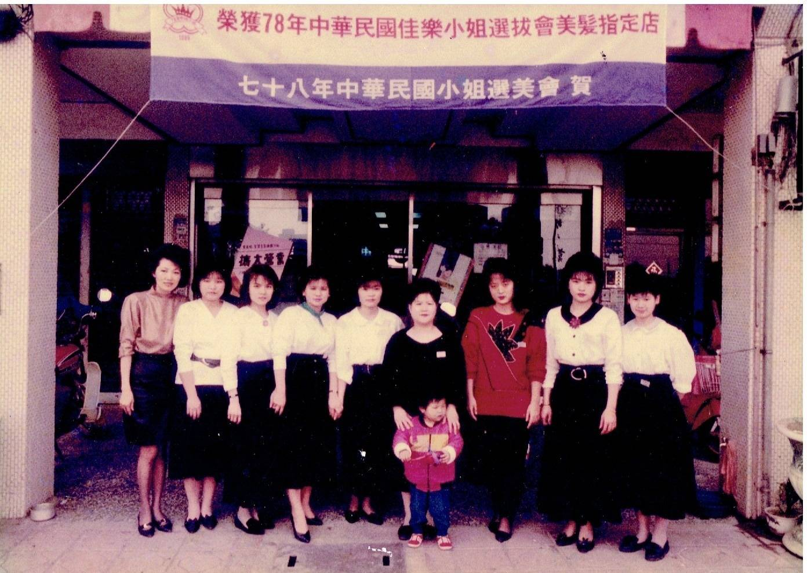
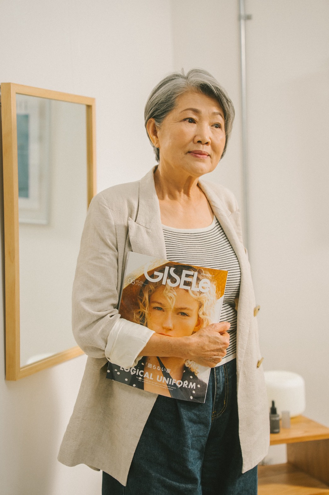
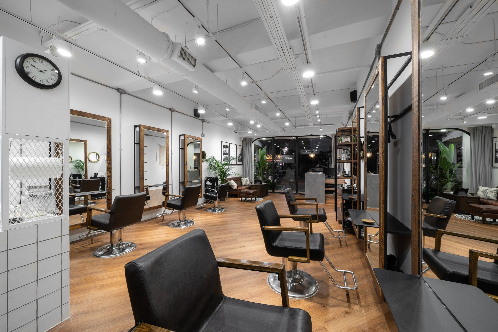

在地信任
長期服務南崁、蘆竹顧客，以穩定品質建立回訪關係。
About ALICE
ALICE 愛麗絲髮型沙龍深耕桃園南崁，將熟悉的在地服務、細緻溝通與日系輕奢美感結合，陪顧客整理出適合日常的髮型。

我們相信好看的髮型不只來自流行，更來自髮質、頭皮、生活習慣與設計師判斷之間的平衡。
Brand Philosophy
ALICE 的服務從溝通開始。每一次剪、染、燙、護，都會回到顧客的髮況、整理習慣與想呈現的氣質，讓造型不只在離開沙龍當下好看，也能在日常裡維持質感。
長期服務南崁、蘆竹顧客，以穩定品質建立回訪關係。
染燙前重視髮質、頭皮與過去紀錄，降低不必要風險。
以日系輕奢的柔和線條與耐看髮色，打造舒服的日常風格。
50 Years
從家庭日常到重要場合，ALICE 陪伴許多顧客整理不同階段的自己。品牌持續更新技術、產品與內容溝通方式，讓經驗不只是年份，而是每一次服務裡的穩定判斷。




理解不同年齡與生活型態的髮型需求。
持續導入剪燙染護與頭皮管理的專業流程。
把髮況、價格與服務流程說清楚，讓預約更安心。